Part 1: Insect conservation — the need of the hour
By Tejaswini Venkatramanan
It’s the monsoon season. It’s raining heavily outside. The most fascinating thing is not the rain but what happens after the rain. It’s not the change in the weather from being humid to cool but the diversity of tiny, winged beings that come out from their cosy residences and fly around, some trying to get close to tube lights and LEDs, sometimes with peculiar sounds. They don’t live long but live big. Yes, I am talking about insects. Insects (Phylum: Arthropoda) are one of the most abundant species on the planet. They come in a variety of colours, sizes and beautify the earth in many folds, not only with their looks but also with what they do in the ecosystem.
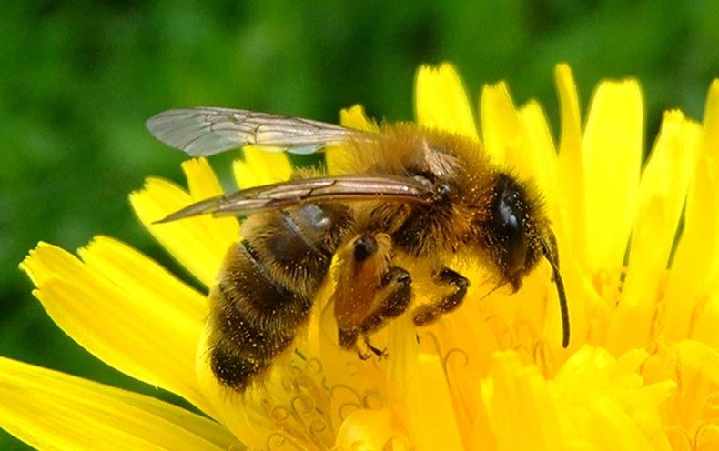
Insects play a significant role in the ecosystem as pollinators. They improve soil fertility, aeration and help in seed dispersal. They also provide products useful for humans like honey, silk, and lac. Recycling nutrients in the soil would have been complicated without the contribution of insects. They are a part of intricate food chains, so their diminishing numbers would create an imbalance in the ecosystem as the other taxa that depended on the insects for their food would starve. In certain countries, some humans do the job of pollination but the effect isn’t the same as the one produced by insects, especially bees, which increase crop production worldwide by about 300 percent! Without them, we wouldn’t be enjoying the fruits (literally and metaphorically) of their labour.
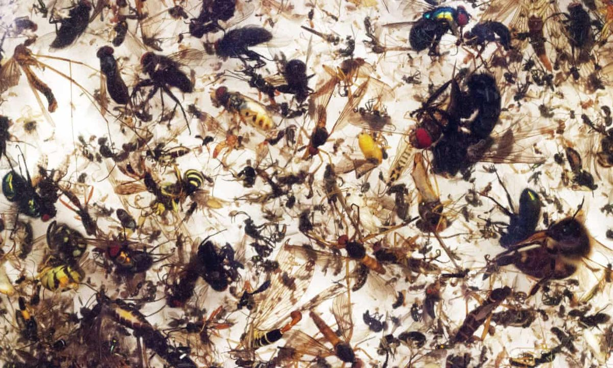
(SOURCE: GUARDIAN)
(PHOTOGRAPH BY : Courtesy of Entomologisher Verein Krefeld)
There are about 5.5 million insect species in the world so far. In recent years, their numbers are decreasing at an alarming rate. Their decline began during the Second World War due to the advent of synthetic pesticides. Since then, the numbers are reducing at an alarming rate. A recent scientific review in the Biological Conservation journal stated that around 40 percent of insect species are likely to become extinct in the coming years! 40 percent of that would mean 2,200,000 insects!
Unfortunately, there isn’t sufficient data in India that analyses the change in insects, as observed by P.T. Cherian, former director of the Zoological Society of India.
However, there are cases of insect declining numbers that several Indian entomologists observed and reported in Mongabay, India. One such entomologist is CA Virakthamath, Professor Emeritus at Gandhi Krishi Vignana Kendra (GKVK), Bengaluru and an authority on leafhoppers. Along with his students, he visited Coonoor in the 1970s and noticed that a certain leafhopper of genus Gunhilda (spotted earlier) was “missing.” Another notable entomologist is Rohini Balakrishnan, Chairperson of the Centre for Ecological Studies at the Indian Institute of Science (IISc), Bengaluru. She specialized in insect acoustics, particularly crickets and Tettigoniidae, observed that the sounds made by insects are not as much as it was earlier. These instances indicate a decline in the number of insects and are a significant cause of concern.
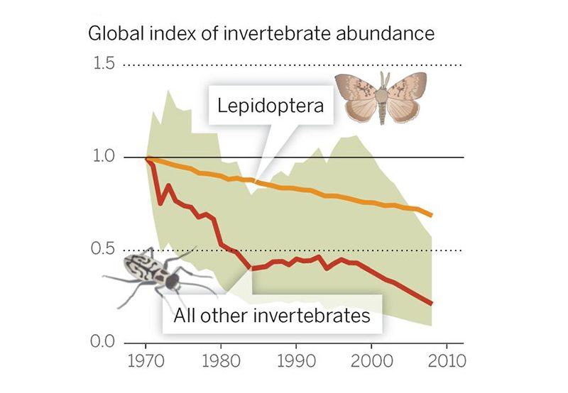
So, why are insects becoming endangered at an alarming level? Urbanization, leading to habitat change and pollution are the main culprits. Usage of pesticides directly or indirectly affects the reproduction, memory, navigation capability of insects and their progeny. Due to urbanization, there is a loss of natural host plants. Although exotic plant species replace these, it’s not the same as the poor insects are deprived of their food and space to reproduce. Climate change through changing rainfall patterns and distribution has also altered the vegetation growth, thus affects the insect population as the insects are adapted to only a specific rainfall and vegetation pattern. A study in 2010 was conducted to learn about the effect of increased cell phone radiation. It was found that the radiation did change the behaviour of honey bees. The whole colony was affected and later collapsed, similar to when exposed to an electric field.
These observations and studies show that insect conservation is one of the needs of the hour.
Part 2: Insect conservation — global strategies and solutions
By Bhavya Subi
The solutions suggested support insect conservation be integrated with overall biodiversity conservation and climate change mitigation. The global strategies to tackle the situation drawn by many representing various sub-disciplines of insect conservation are listed below :
Developing appreciation of insects
The value of insects should be communicated in a better way to humanity. Valuation is the foundation for what we do in practice as it sets standards and directions. Addressing personal and collective well-being (eudaimonia) will be more effective in conservation strategies. This valuing of insects is ethical and effective and goes beyond purely economic terms. Although economics is essential, it is vital to maintain the mutual value of well being beyond today's perspectives for the long term promotion of mutual well-being for future generations of both people and insects.
It starts by identifying various critical factors for insect survival, with the landscape level key in this process, recognising the importance of smaller (mesoscale and microhabitat) and larger (regional and global) spatial scales.
Forests
Maintenance of forest insect diversity requires the conservation of large areas of intact primary forest. Areas that are now degraded need to be recovered to regenerate. Recovery entails more than just trees but also epiphytes. Furthermore, restoration should aim at a natural age structure, including veteran trees important for many saproxylic insects. Sustainable forest management can also be improved for insect conservation. Pollarded snags, stumps and fallen branches are retained for insect colonisation.
Grasslands and other habitats
Native grasslands and other habitats such as deserts, savanna, sclerophyllous vegetation and moist meadows are valuable. They enable, at least to some extent, large insect populations and serve as source habitats. It is necessary to maintain functional connectivity by instigating large-scale conservation corridors, similar seral stages, and high-quality stepping-stone habitats to improve metapopulation dynamics.
As grasslands are particularly vulnerable to excessive fertiliser and atmospheric nitrogen, their inputs must be reduced.
Freshwaters
Freshwaters support 6% of all known insect species. Catchment-wide conservation of freshwater systems is an important management objective. Channelisation should be avoided as it dramatically reduces insect diversity and causes local hydrological drought. It is essential to maintain natural dynamics in freshwater systems in general for improved vegetation and insect heterogeneity.
Agriculture
Agroecology
Instigating agroecological approaches improves the production landscape away from that of conventional agriculture towards protected areas. High yields and effective biodiversity conservation become integrated when traditional cultural practices relating to local crop production systems are applied. These historical integrated systems provide both ecological, evolutionary opportunities and long-term sustainability. Insect species richness, assemblage composition, and particularly abundance are significant in agro-ecology.
Organic farming
Organic farming aims to move away from the negentropic artificial substance and disturbance characteristics of conventional agriculture to working with nature for a healthy and resilient landscape mosaic. Organic farming has a positive effect on insect diversity compared to traditional agriculture, with a general increase of 30% in species richness.
Integrated pest management
In response to the harmful effects of pesticides, integrated pest management has been implemented, an ecologically sensitive approach using cultural methods to enhance levels of biological control to guarantee pest control while enhancing insect diversity.
Conservation of insects in urban and suburban areas
Natural ecosystems, in cities and towns, are replaced by green landscapes ( green spaces) and hard surfaces ( hardscape). Insect conservation value increases when greenspace proportion is high compared to hard space and when herbaceous and shrubbery vegetation is tall compared to lawn. Clumps of large indigenous trees should be protected wherever possible. Public parks, Railway embankments with vacant land, botanical gardens, old walls with crevices (rich in plant species) etc. They are essential as they provide shelter to many insect species.
The most practical way is to combine insect conservation with human security and safety.
Agro-environment schemes
AES are sets-aside non-production areas to benefit local biodiversity, first developed in Europe but later expanded elsewhere. They involve maintaining field borders and herd grows which support higher species diversity than production areas. AES (Agro-environmental schemes) may, for example, benefit flower-visiting insects and herbivorous species with agroecological practices tailored to promote different taxonomic and functional groups, usually through increasing the proportion of land area assigned to conservation relative to production areas, while also identifying areas of high natural value.
Solutions that can be practised locally
1 Avoid mowing your lawn frequently; let nature grow and insects feed
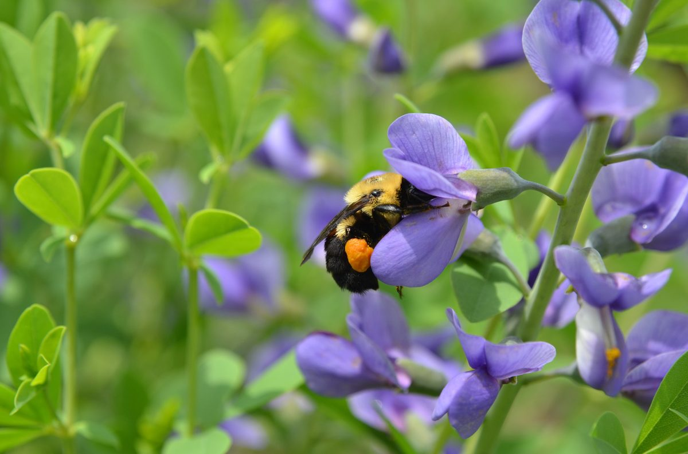
SOURCE : NEW YORK TIMES
2 Plant native species; many insects need only these to survive
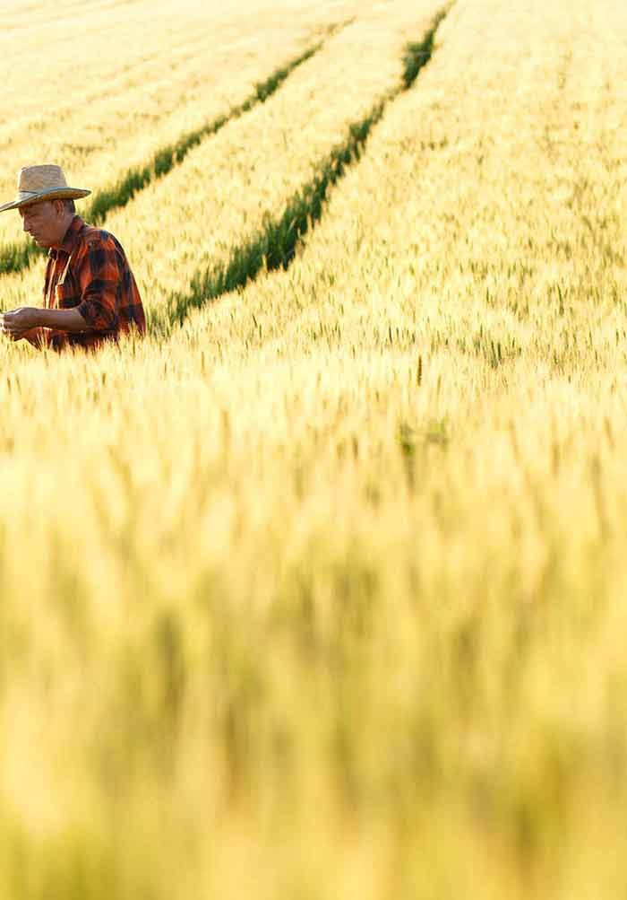
3 Avoid pesticides; go organic, at least for your backyard
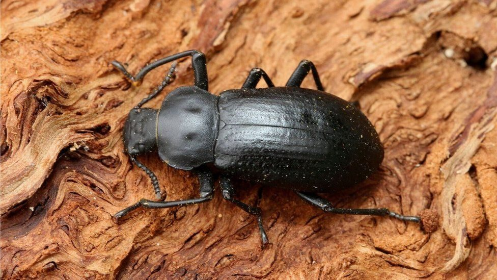
SOURCE: BBC
4 Leave old trees, stumps and dead leaves alone; they are home to countless species
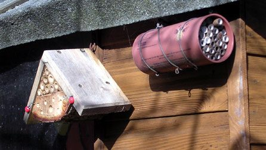
SOURCE : BREATHING PLACES, BBC.
5 Build an insect hotel with small horizontal holes that can become their nests
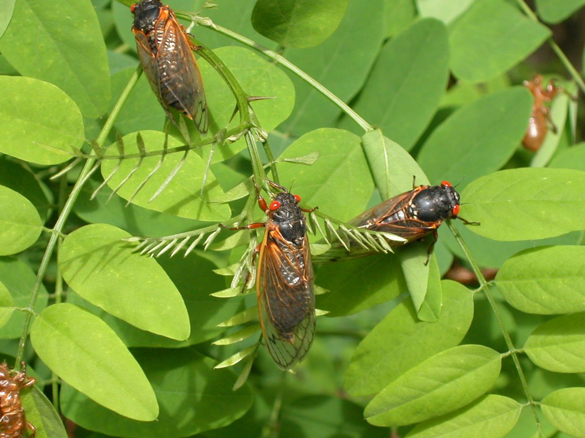
SOURCE : WASHINGTON POST
(Photo by Richard Ellis/Getty Images)
6 Reduce your carbon footprint; this affects insects as much as other organisms
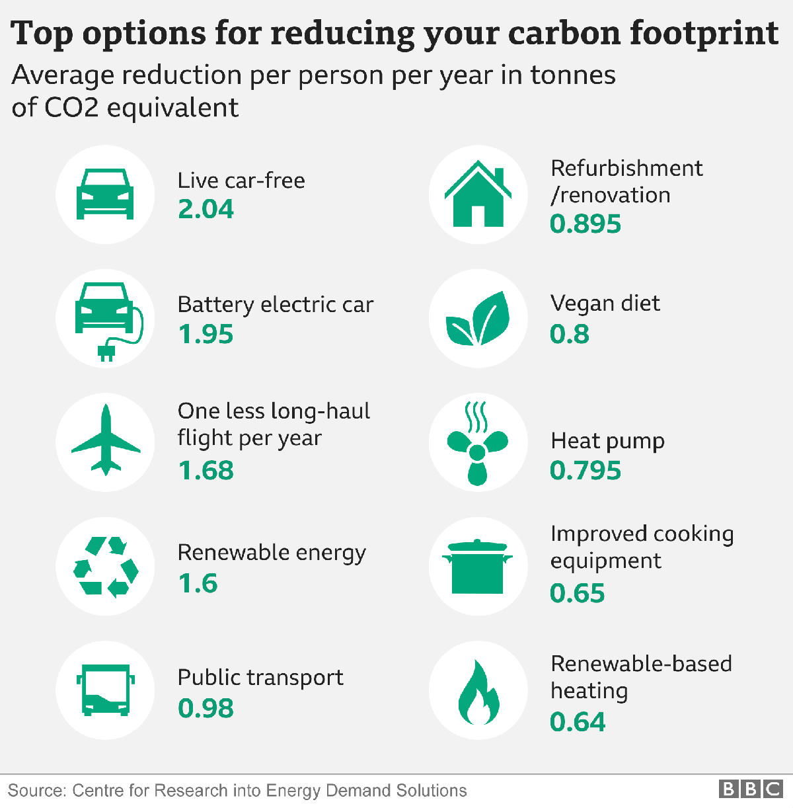
7 Support and volunteer in conservation organisations
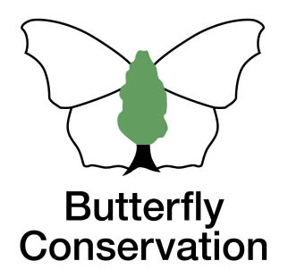
SOURCE: www.butterfly-conservation.org
8 Do not import or release living animals or plants into the wild that could harm native species
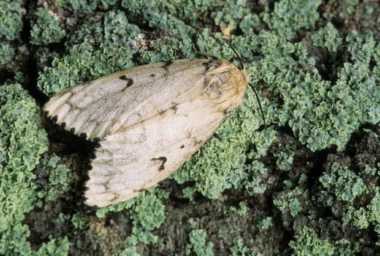
9 Be more aware of tiny creatures; always look from the smaller side of life.
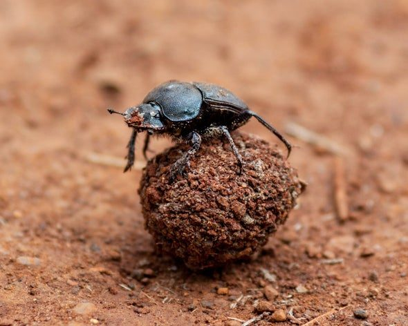
CREDIT: Getty Images
It is our duty to provide a space for our tiny cohabitants; they have the same claim over the earth as we have. We should join our hands to conserve the beautiful butterflies that make our gardens more beautiful; The different pollinators contribute to the grains and seeds we eat and a vast majority of insects for our future generations. One should consider insect conservation as a serious issue that can change the resource availability of the future!
References
- https://www.xerces.org/pesticides/risks-pesticides-pollinators
- https://india.mongabay.com/2019/06/insects-are-disappearing-in-india-and-we-dont-even-have-data/
- https://india.mongabay.com/2019/06/insects-are-disappearing-in-india-and-we-dont-even-have-data/?utm_source=Mongabay+India&utm_campaign=b2bddc14f2-RSS_DailyUpdate_CAMPAIGN&utm_medium=email&utm_term=0_7953c9bb60-b2bddc14f2-30964847
- https://www.youtube.com/watch?v=dY7iATJVCso
- https://www.sciencedirect.com/science/article/pii/S0006320719317793
- https://phys.org/news/2020-04-scientists-humanity-insect-extinctions.html